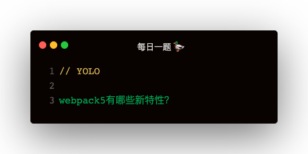

新特性
- 持久化缓存
- 资源模块
- moduleIds chunkIds优化
- tree-shaking
- 模块联邦
持久化缓存
开启持久化缓存，不配置的话默认不开启缓存，试过打包时间都差不多
cache: {
type: 'memory | filesystem',
cacheDirectory: path.resolve(__dirname, 'node_modules/.cache/webpack')
}
资源模块
webpack4 的资源模块加载:
- file-loader 加载文件，并返回 url
- url-loader 加载文件，并返回 base64 编码
- raw-loader 加载文件，并返回文件字符串内容
{
test: /\.jpg$/,
loader: 'file-loader | url-loader | raw-loader'
}
webpack5 中内置了这些 loader，配置更简单：
file-loader
{
test: /\.jpg$/,
type: 'asset/resource'
}
url-laoder
{
test: /\.jpg$/,
type: 'asset/inline'
}
自动根据文件大小判断使用 file-loader 还是 url-loader
{
test: /\.jpg$/,
type: 'asset',
parser: {
dataUrlCondition: {
maxSize: 10 * 1024
}
}
}
raw-loader
{
test: /\.txt$/,
type: 'asset/source'
}
moduleIds chunkIds 优化
webpack4 中
- moduleIds 使用的是 named 命名方式，即 ./a.js 路径作为 key
- chunkIds 使用的是 natural 命名方式，即 1.js 之类的引用顺序数字作为 chunkName
这种方式有个问题：
webpack4 中非入口模块的命名是按照引用顺序数字命名的，如果某个文件被删除，会导致之后的文件缓存失效，webpack5 中 chunkIds 默认采用 named 的命名方式
- natural: 数字顺序命名
- named: 文件路径命名方式，module 如 ./a.js，chunk 如 src_c_js.js
- deterministic: 根据模块名称生成简短的三位 hash 值作为文件名，chunk 数超过 999 会冲突
- size: 试过是看文件个数
配置
output: {
filename: '[name].[hash:8].js',
chunkFilename: '[name].[hash:8].js'
},
optimization: {
moduleIds: 'deterministic',
chunkIds: 'deterministic'
}
更强大的 tree-shaking
webpack v5 对 tree-shaking 进行了增强
- 嵌套 tree-shaking
- commonjs tree-shaking
嵌套 tree-shaking
下面这个例子，v4 会打包 bbbbb，v5不会打包
// inner.js
export const aaaaa = 1;
export const bbbbb = 1;
// module.js
import * as inner from './inner'
export default {
aaaaa
}
// index.js
import module from './module'
console.log(module.inner.aaaaa)
commonjs tree-shaking
v4 的 tree-shaking 是基于 import 的，v5 中增加了 commonjs 支持
// module.js
exports.aaaaa = function () {
console.log('aaaaa')
};
exports.bbbbb = function () {
console.log('bbbbb')
};
// index.js
const aaaaa = require('./module').aaaaa;
aaaaa();
development 模式如何查看未使用的export
optimization: {
usedExports: true
}
模块未使用到但是改变了全局变量如何处理
举个例子
document.title = 'tree-shaking'
function aaa () {
console.log('aaa')
}
这个例子中 document.title 会被保留，aaa会被删除
通过设置 sideEffects 可以使 document.title 也被删除
// package.json
{
sideEffects: false
}
如果是 import 'index.css' 怎么办，配置了 sideEffects 会导致 css也被删除
// package.json
{
sideEffects: '*.css'
}
告知 webpack 此方法是纯函数，可以被 shaking
var Person = /*#__PURE__*/function () {
function Person () {};
return Person;
}
模块联邦
动机：多个团队一起开发一个或多个应用程序，应用程序被拆分成小部分，可以是 UI 组件，也可以是数据请求，或其他业务组件 优点：
- 组件热更新，异步组件运行时性能好
- 分别打包，打包性能好
- 依赖共享，如 React 等
remote 项目导出组件
const ModuleFederationPlugin = require('webpack/lib/container/ModuleFederationPlugin');
plugins: [
new ModuleFederationPlugin({
name: 'AddressProject',
filename: 'AddressForm.js',
exposes: {
'./AddressForm': './components/AddressForm'
}
})
]
hosts 项目使用组件
webpack 配置文件声明
const ModuleFederationPlugin = require('webpack/lib/container/ModuleFederationPlugin');
plugins: [
new ModuleFederationPlugin({
name: 'cartProject',
remotes: {
addrProj: 'AddressProject@http://localhost:8080/AddressForm.js'
}
})
]
组件使用
const AddressForm = React.lazy(() => import('addrProj/AddressForm'));
<React.Suspense fallback={<div>remote component loading</div>}>
<AddressForm />
</React.Suspense>
跨框架不可行
一个项目 React，一个项目 Vue，是无法共享组件的
Vue 中异步组件
components: {
Header: () => import('address/AddressForm')
}
相比其他的有点
ModuleFederationPlugin 与本地模块，npm 打包，dll，externals相比较
参考网址：https://github.com/sokra/slides/blob/master/content/ModuleFederationWebpack5.md